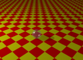
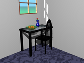
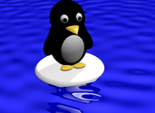
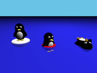

מדריך עיצוב תמונות תלת-מימדיות עם KPovModeler
|
מדריך זה נכתב ע"י גיא שקד,דצמבר 2003
כל הזכויות למדריך שמורות לפרוייקט גנו/לינוקס כנרת הרשות נתונה בזאת להעתיק, להפיץ ו/או לשנות את המסמך הזה, תחת תנאי רשיון ה GNU לשימוש חופשי במסמכים, גרסה 1.2 או כל גרסה מאוחרת יותר שתפורסם ע"י קרן התוכנה החופשית. |
KPovModeler היא תוכנה לעיצוב סצינות תלת מימדיות המבוססת על שפת Pov-ray. מדריך זה ידריך אותך בשימוש בתוכנה ליצירת מגוון תמונות תלת-מימדיות.
|  |  |
|  |  |
1. הכרת התוכנה
ממשק המשתמש
ממשק המשתמש מתחלק לארבעה אזורים עיקריים -
אזור מוקף באדום
כפתורי האובייקטים, המחולקים לשמונה תפריטים -
- תפריט הפעולות (קובץ חדש, פתיחה, שמירה, הדפסה, העתקה מחיקה .כו'...)
- תפריט האובייקטים - (תיבה, כתור, גליל, טבעת וכו'..) המאפשר להוסיף אובייקטים מסוגים שונים לסצינה.
- תפריט היחסים (איחוד, חיתוך, הבדל וחיבור) המאפשר להגדיר יחסים בין אובייקים שונים.
- תפריט המשטחים (משטח ישר, עקום, דיסק וכו'...) המאפר להוסיף משטחים לסצינה.
- תפריט הטבע (שמים, קשת, ערפל) .
- תפריט הבקרה (מצלמות, תאורה, הערות וכו'...).
- תפריט השינויים (שינוי גודל, סיבוב, הזזה ומטריצה) מאפשר לבצע שינויים באובייקטים.
- ותפריט המראה (חומר, טקסטורה, צבע, גימור וכו'...) - מאפשר להגדיר איך ייראה האובייקט לאחר שקבענו את צורתו.
אזור מוקף בכחול
עץ האובייקטים, בו מוצגים כל האובייקטים הקיימים בסצינה. האובייקט הראשי הוא הסצינה עצמה, ותחתיה מקוננים כל שאר מרכיבי הסצינה.
אזור מוקף בירוק
חלון הפרטים, המציג את המאפיינים השונים של המרכיב הנבחר בסצינה - ומאפשר לערוך אותם. בדוגמא למעלה נבחרה הסצינה עצמה (ניתן לראות זאת בעץ האובייקטים) ומכיוון שלסצינה עצמה אין מאפיינים חלון הפרטים ריק.
אזור מוקף בצהוב
מסכי התצוגה - מסכים אלו מציגים את הסצינה מכיוונים שונים (מימין למעלה נגד כיוון השעון - מבט מלפנים, מבט משמאל, מבט מלמעלה, מבט מן המצלמה). הם משמשים כלי עזר מצויין כדי לוודא שהאובייקטים נמצאים בדיוק במקום הרצוי, ומאפשרים גם להזיז ולשנות אותם בצורה גרפית.
2. כדור על משטח
הסצינה הראשונה שנבנה היא סצינת פתיחה מקובלת למתחילים בעולם התלת מימדי - כדור על משטח. ותראה כך -
כדי ליצור את הסצינה הזו יש ליצור קובץ חדש (כזה נוצר אוטומטית כאשר מפעילים את KPovModeler). בברירת מחדל עץ האובייקטים של קובץ חדש ייראה כך -
- סצינה (Scene) - שתחתיה מצויים כל האובייקטים.
- הגדרות גלובליות (Global Settings) - הגדרות כלליות עבור הסצינה, אנו נשתמש בהגדרות ברירת המחדל.
- תיבה (Box)
- תאורה (Light) - שקובעת מאיפה יגיעה האור ואיך הוא יראה
- מצלמה (Camera) - שקובעת מאיפה תצולם הסצינה.
משטח
הצעד הראשון יהיה למחוק את התיבה - פשוט על ידי לחיצה עליה בעץ האובייקטים ולחיצה על מקש Delete.
לאחר מכן נוסיף משטח על ידי לחיצה על הכפתור המתאים בתפריט -
המשטח יתווסף לעץ התפריטים מתחת לאובייקט הנבחר (באופן כללי אין משמעות לסדר האובייקטים בעץ התפריטים, מלבד במקרים מיוחדים כמו יחסי חיתוך או הבדל וטרנספורמציות כמו סיבוב והזזה).
אחרי שהוספנו משטח, יש לקבוע איך הוא ייראה, לשם כך קיים חלון הפרטים -
משטח (Plane) הוא אובייקט חד מימדי, הנפרס על כל העולם התלת מימדי בהתאם לכיוון שנקבע, את כיוון המשטח קובעים על ידי ווקטור מאונך למשטח (נורמל - Normal), כלומר - אם נרצה ליצור רצפה - עלינו לספק ווקטור על ציר הY, קיר ייווצר על ידי ווקטור על ציר הX או הZ, ומשטח משופע על ידי ווקטור על ציר הY וגם על ציר הX או הZ. מכיוון שאנחנו מעוניינים ברצפה נשאיר האת הנורמל על ציר הY - 0,1,0
המרחק (Distance) קובע את מרחקו של המשטח מנקודת המרכז 0,0,0. מכיוון שאנחנו מעוניינים ברצפה בגובה 0, נשאיר את המרחק 0.
אחרי שקבענו ת צורת המשטח ניתן לו צבע. על מנת לתת צבע לאובייקט צריך להוסיף לו פיגמנט (Pigment) -
- חשוב להקפיד לבחור את המשטח כשמוסיפים את הפיגמנט.
- שים לב שכשתנסה להוסיף את הפיגמנט תישאל האם אתה רוצה שהוא יהיה הבן הראשון (First Child) או האחרון (Last Child) כאן, שוב, אין משמעות לסדר, והוא יוכל להיות הראשון או האחרון.
- שים לב שכאשר תוסיף את הפיגמנט כפתורים רבים בתפריט המראה יהפכו להיות פעילים - משום שהם יכולים להפויע רק כחלק מפיגמנט.
אל הפיגמנט נוסיף רשימת צבעים (Color List) -
רשימת צבעים מאפשרת ליצור בקלות מראה של משבצות (Checkers) , לבנים (Bricks), או משושים (Hexagon). אנחנו נבחר במשבצות (שהיא גם ברירת המחדל). כדי לקבוע את צבעי המשבצות נוסיף לרשימת הצבעים צבע -
צבע הוא שחור בברירת מחדל, ניתן לשנות אותו על ידי קביעת ערכי הRGB (אדום, ירוק, כחול - Red Green Blue) או לחיצה על הצבע - שתפתח חלון ידידותי לבחירת הצבע הרצוי. במקרה שלנו נקבע את הצבע לאדום על ידי הכנסת 1 בשדה Red.
- שים לב שכאשר מבצעים שינוי במאפיינים של אובייקט מסויים יש להקיש Enter או ללחוץ על כפתור הApply כדי שהשינויים יכנסו לתוקף.
כעת נוסיף עוד צבע, ונהפוך אותו לצהוב (Red = 1, Green=1, Blue=0).
עכשיו ניקח הפסקה קטנה מהעיצוב, ונצפה במה שעשינו עד עכשיו, על ידי לחיצה על כפתור הרינדור (Rendering) -
ותוך כמה שניות יופיע על המסף המשטח המשובץ שלנו.
תרגול
- הפוך את המשטח לקיר אופקי על ציר הZ, ולקיר אופקי על ציר הX.
- הפוך את המשטח למשטח משופע בכיוונים שונים.
- שנה את צבעי המשבצות של המשטח.
- החלף את המשבצות במשושים (Hexagon), והוסף צבע שלישי לרשימת הצבעים.
כדור
נבחר שוב בסצינה (בתוך עץ האובייקטים), ונוסיף כדור -
כדור נקבע על ידי נקודת המרכז, ואורך הרדיוס. ברירת המחדל של כדור היא נקודת המרכז 0,0,0 ורדיוס באורך 0.5. מצב כזה יגרום לכדור שלנו להיות שקוע בתוך המשטח. כדי שהכדור יהיה מעל למשטח נצטרך להרים את הכדור או להוריד את המשטח, במקרה הזה - נרים את מרכז הכדור לנקודה 0,0.5,0, כך הנקודה הנמוכה ביותר שלו תהיה ב0,0,0 - בדיוק על המשטח.
לכדור נוסיף פיגמנט (כדי שנוכל לתת לו צבע).
ולתוך הפיגמנט נוסיף צבע תכלת (Red =0.5, Green=0.8, Blue=0.9)
- בצע רינדור, בדוק שהכדור על המשטח, וראה את צבע הכדור.
מכיוון שאנחנו רוצים כדור מזכוכית נוסיף לצבע שלו שקיפות, על ידי שינוי ערך הTransmit (העברה), הערך הזה קובע כמה מהאור שמגיע אל הצבע יעבור דרכו, בערכים שבין 0 (אטום - צבע רגיל) ל1 (שקוף לחלוטין). הכדור שלנו לא יהיה שקוף לחלוטין - ונקבע לו ערך Transmit של 0.8.
- בצע רינדור וראה את השפעת הTransmit. (לא לשכוח Apply קודם!)
כדי לגרום לכדור להראות אמיתי יותר, נוסיף לו גימור (Finish) -
[את הגימור ניתן להוסיף כאשר הפיגמנט או הכדור עצמו נבחר, אבל לא כאשר בוחרים בצבע, או באובייקט אחר בתוך הפיגמנט]
הגימור מאפשר לנו לשלוט באופן שבו "יתנהג" האובייקט, כאילו קבענו מאיזה חומר הוא עשוי.
הדבר הראשון שנעשה הוא ליצור את הברק הבהיר שמאפיין את הזכוכית, ובכלל חומרים מבריקים, את הברק הזה אנחנו יוצרים על ידי Phong - שקובע את עוצמת הברק, וPhong size שקובע את הגודל של החלק הבהיר. בשביל הגולה שלנו נקבע - Phong=1 Phong size=40.
- בצע רינדור וראה את השפעת הPhong. (לא לשכוח Apply קודם!)
מעבר לשקיפות זכוכית גם מחזירה חלק מהאור, לכן נסמן תחת הגימור גם Reflection (החזרה), החזרה נקבעת על ידי צבע - ככל שהצבע בהיר יותר - ההחזרה חזקה יותר. במקרה שלנו נסתפק בהחזרה של Red=0.1 Green=0.1 Blue=0.1. בסופו של דבר חלון הפרטים של הגימור ייראה כך -
וזהו, הסצינה מוכנה, נשאר רק לטפל בעניינים טכניים כמו התאורה והמצלמה.
תרגול
- הגדל את הכדור לרדיוס 3 והשאר אותו כך שיונח על המשטח.
- שנה את הצבע והשקיפות של הכדור.
- בדוק את ההשפעה של ערכים שונים של ההחזרה על מראה הכדור.
תאורה ומצלמה
למצלמה (Camera) יש מספר לא מבוטל של מאפיינים, כרגע נתרכז בשניים -
- מיקום (Location) - קובע איפה תהיה המצלמה במרחב. ברירת המחדל היא 5,5,-5 - ונשאיר אותה כפי שהיא.
- מבט על... (Look at) - קובע לאיזו נקודה במרחב תפנה המצלמה. ברירת המחדל היא 0,0,0 ונשאיר אותה כפי שהיא.
עבור מקור האור (Light) ניתן לקבוע את -
- הצבע (שקובע גם את עוצמת האור).
- סוג האור - Point = תאורה רגילה. Spot - תאורה על איזור מוגדר, וכו'...
- מיקום המנורה.
אנחנו נישאר עם אור לבן (Red=1,Green=1,Blue=1), תאורה רגילה (Point light), ורק נזיז אותו לנקודה -5,5,-5 כדי ליצור את הצל הברור.
זה הכל - עכשיו כל מה שנשאר זה לרנדר - ותתקבל בדיוק התמונה שפתחה את הפרק הזה -
תרגול
- שנה את מיקום המצלמה.
- שנה את צבע האור (ניתן להשתמש בערכים מעל ל1 לעוצמות אור גבוהות יותר)
- מקם את האור בתוך הכדור.
במידה ונתקלת בבעיות במהלך הפרק ניתן להסתכל ב opt/kinneret/l2swim/doc/samples/ball.kpm/ המכיל את הסצינה כולה.
3. חדר עם חלון
אחרי שהבנו את עקרונות העבודה עם Kpovmodeler נעבור לבניית סצינה יותר מורכבת -
שוב נתחיל מקובץ חדש. האובייקט הראשון שניצור יהיה החדר, אותו ניצור על ידי התיבה (Box). תיבה נקבעת על ידי המיקום של שתי פינות נגדיות. החדר שלנו יהיה בגודל 10X10, ובגובה 5. מרכז החדר יהיה ב0,0,0 והרצפה בגובה 0. לכן את הפינות נקבע -
פינה ראשונה - -5,0,-5
פינה שנייה - 5,5,5
לתיבה שלנו יש כבר פיגמנט וצבע, אך הצבע נקבע לירוק, נשנה את הצבע ללבן (Red=1, Green=1, Blue=1).
החדר מוכן, אבל עכשיו המצלמה שלנו נמצאת בתוך הקיר, כאשר מצלמה או גוף תאורה נמצא בתוך קיר של אובייקט אחר התמונה יוצאת מטושטשת, ולכן נוציא את המצלמה מהקיר אל נקודה 4,4,-4.
גם המנורה שלנו נמצאת בתוך הקיר, נעביר אותה למרכז החדר, ונתלה אותה מעט מתחת לתקרה - במיקום 0,4.7,0
מכיוון שמדובר בסצינה מורכבת, נבנה כל אובייקט בנפרד, ולאחר מכן נמקם כל אובייקט במקומו. זה יאפשר לנו לשמור על סדר בעץ האובייקטים, ולהשתמש בחל ממרכיבי הסצינה גם בסצינות אחרות בקלות.
העט
עכשיו נפנה לעצב את הפריט הראשון בסצינה - העט.
נתחיל מחרוט (Cone) -
חרוט מוגדר על ידי שתי נקודות, ושני רדיוסים, למעשה ניתן ליצור בעזרתו גם גליל (אם שני הרדיוסים זהים), או חרוט קטום (אם שני הרדיסים גדולים מאפס) ורק אם רדיוס אחד יהיה שווה לאפס, והשני גדול מאפס יתקבל חרוט.
את הקצה הראשון נמקם בנקודה 0,0,0 - הוא יהיה חוד העט שלנו ולכן הרדיוס שלו יהיה 0.
את הקצה השני נמקם בנקודה 0,0.06,0 - והוא יהיה בעובי העט - רדיוס 0.015
לא הגדרנו פיגמנט או צבע לחרוט, ולכן הוא ישאר שחור - בדיוק כפי שאנחנו רוצים אותו.
נמשיך עם גליל (Cylinder) - שיהיה גוף העט -
גליל מוגדר בדומה לחרוט, על ידי שתי נקודות, אבל רק רדיוס אחד.
את הנקודה הראשונה נקבע בקצה החרוט - 0,0.06,0
ואת השנייה בקצה העליון של העט - 0,0.46,0
את הרדיוס נקבע ל 0.015
לגליל נוסיף פיגמנט, ולפיגמנט צבע כחול (Red=0.3, Green=0.3 Blue=0.5).
נוסיף את הידית, שעשויה משתי תיבות, האחת תוגדר על ידי
פינה ראשונה - 0.01,0.44,0
פינה שנייה - -0.01,0.445,0.3
והתיבה השנייה -
פינה ראשונה - -0.01,0.44,0.03
פינה שנייה - -0.01,0.27,0.02
לשתיהן אין צורך בפיגמנט משום שהידית שלנו שחורה.
כעיקרון סיימנו לעצב את העט. אם נתקלת בבעיות עד לשלב הזה תוכל לבדוק בקובץ pen.kpm שמכיל את העט על משטח לבן וממנו לנקחה התמונה שבתחילת הצעד.
עכשיו נשארו רק כמה עניינים טכניים - כדי שכל העט שלנו יתנהג כמו גוף אחד ולא כמו ארבעה גופים נפרדים נוסיף איחוד (Union) -
איחוד מאפשר להגדיר מספר פריטים כאובייקט אחד, ההגדרה הזו טובה במיוחד כאשר רוצים לבצע טרנספורמציות )שינוי גודל, סיבוב, הזזה) על כמה חלקים ביחד.
לאיחוד שלנו, כמו לכל אובייקט אחר יש שדה שנקרא "שם" (Name), אין לשם של האובייקט משמעות, אבל הוא מאפשר לנו לסייר בעץ האובייקטים בקלות יחסית.
לעט ניתן את השם המפתיע - Pen.
עכשיו אפשר לרנדר את התמונה - ולראות את העט שיצרנו, הבעייה היא שהוא קטן, והמצלמה רחוקה, לכן אפשר לקרב את המצלמה (למשל ל1,1,1 כדי לראות את העט טוב יותר).
תרגול
- קצר את הידית של העט.
- צור איחוד משני חלקי הידית של העט, ותן להם צבע על פי בחירתך.
כדי שהעט לא יפריע במהלך העיצוב של האובייקט הבא, נוסיף הכרזה (Decleration) -
הכרזה מאפשרת לנו להגדיר אובייקט מסויים, ולאחר מכן להשתמש בו כמה פעמים שנרצה, מבלי שנצטרך לשכפל בכל פעם את האובייקט. האפשרות הזו חיונית בעיקר כשמשנים מאפיין קטן באובייקט שמופיע יותר מפעם אחת בסצינה, אך עוזרת גם לשמור על הסדר.
להכרזה שלנו ניתן את השם (Name) - Pen
ולתוכה נגרור את האיחוד שנקרא Pen.
- רנדר את התמונה וראה שהעט נעלם, הוא יופיע רק כאשר נוסיף קישור (Object Link) אל העט, בשלבים האחרונים של עיצוב הסצינה.
במידה ונתקלת בבעיות במהלך הפרק ניתן להסתכל ב opt/kinneret/l2swim/doc/samples/pen.kpm/ המכיל הגדרות העט.
השולחן
נתחיל מרגל, שתהיה גליל -
מרכז ראשון - 0.1,0,0.1
מרכז שני - 0.1,1.5,0.1
רדיוס - 0.08
את הרגל הזו נעתיק ונדביק עוד שלוש פעמים, כך שיהיו ארבע רגליים, וכל אחת משלוש הרגליים החדשות נזיז למקום אחר בעזרת הtranslate -
Translate מאפשר לנו להזיז אובייקט קיים מבלי לשנות את פרטי הבסיס שלו.
עבור הרגל הראשונה נשאיר את הtranslate - 0,0,0
עבור השנייה - 1.9,0,0
עבור השלישית - 0,0,0.9
עבור הרביעית - 1.9,0,0.9
ארבע הרגליים במקומן, ועכשיו נפנה ליצירת הפלטה. ניצור תיבה, בעובי (Y) של 0.1, החל מגובה 1.5, באורך (X) של 2.1 החל מ0, וברוחב (Z) של 1.1 החל מ0. או במילים אחרות -
פינה ראשונה - 0,1.5,0
פינה שנייה - 2.1,1.6,1.1
- העבר את המצלמה למיקום - 4,4,4 ורנדר כדי לראות את השולחן.
כדי להוסיף את פלטת הזכוכית נצטרך קודם כל לחתוך חלק מהפלטה הנוכחית. נעשה זאת על ידי אובייקט "הבדל" (Diffrence) -
"הבדל" יוצר אובייקט שמורכב מהאובייקט הראשון שבתוכו, ללא האיזורים שנכללים באובייקט השני.
תרגול
- נסה להמשיך את התמונה בכוחות עצמך.
במידה ונתקלת בבעיות במהלך הפרק ניתן להסתכל ב opt/kinneret/l2swim/doc/samples/table.kpm/ המכיל את הסצינה כולה.
4. פינגווינים בכנרת
ניתן להשתמש בכלי זה לציור תמונות תלת מימדיות שישמשו למסך הטעינה של שולחן העבודה (splash screen) וכן לתמונת הרקע של שולחן העבודה, אולם את זאת נשאיר לפעם אחרת. לבינתיים, תוכל להיעזר בקבצים המצורפים על מנת להגדיל את מגוון התמונות שביכולתך לצייר.

כדי ללמוד איך נבנתה תמונה זו תוכל להסתכל ב opt/kinneret/l2swim/doc/samples/splash.kpm/ המכיל את הסצינה כולה.
כדי ללמוד איך נבנתה תמונה זו תוכל להסתכל ב opt/kinneret/l2swim/doc/samples/wallpaper.kpm/ המכיל את הסצינה כולה.
מסמך זה עובד ונערך עבור גנו/לינוקס כנרת, תוך שימוש בתוכנה חופשית בלבד. עמוד זה תואם לתקנים בינלאומיים המאפשרים צפיה בכל דפדפן תקני. המאפשרים צפיה בכל דפדפן תקני.
|
| לינוקס הוא שם רשום של Linus Torvalds; יוניקס הוא שם רשום של ה Open Group בארה"ב ובמדינות נוספות, Windows הוא שם רשום של Microsoft Corporation. כל שאר השמות הרשומים וזכויות היוצרים שייכים לבעליהם. |
חשוב לדעת! גנו/לינוקס כנרת מסופקת "כפי שהיא", בלא אחריות מסוג כלשהו, בין אם מפורשת ובין אם משתמעת, לרבות, אך מבלי למעט מהאמור, האחריות המשתמעת למסחריות והתאמה למטרה מסוימת. בעלי זכויות היוצרים ו/או מפיצי התוכנה לא ישאו כלפיך באחריות לנזקים, לרבות נזקים כלליים, מיוחדים, משניים או תוצאתיים כלשהם, הנובעים מהשימוש או מאי-היכולת להשתמש בתוכנות המסופקות. עליך .לקרוא בעיון את רישיון השימוש המלא ולהסכים לנאמר בו לפני השימוש בהפצה זו.

|